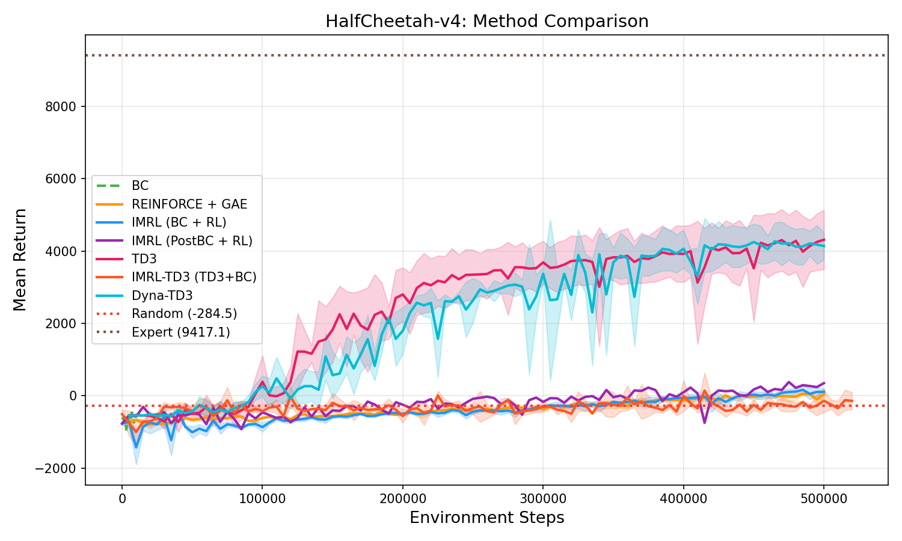
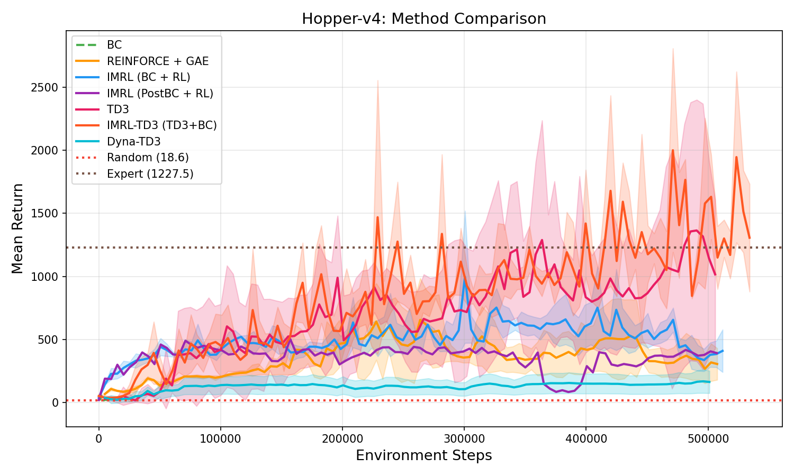
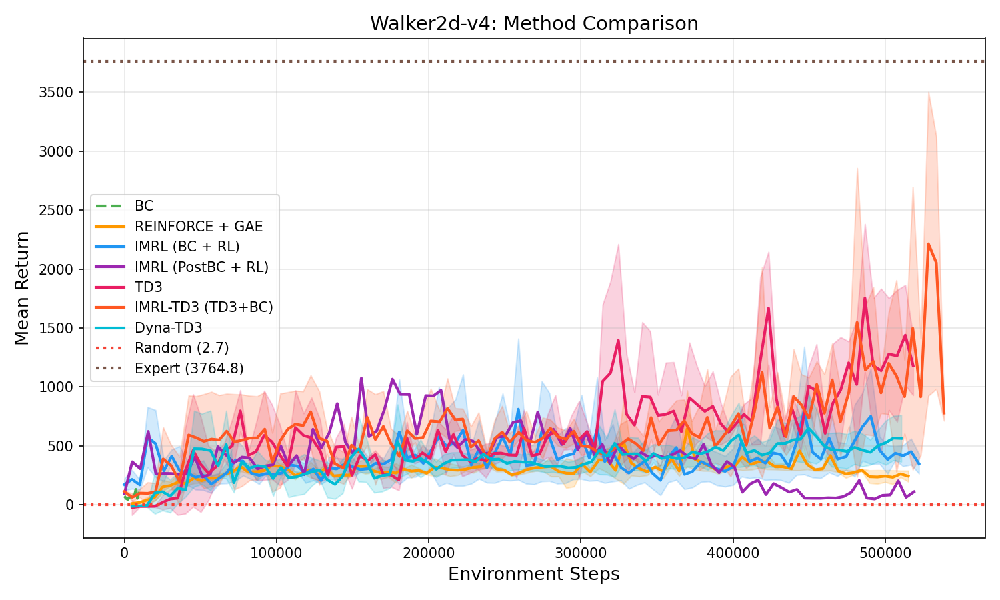
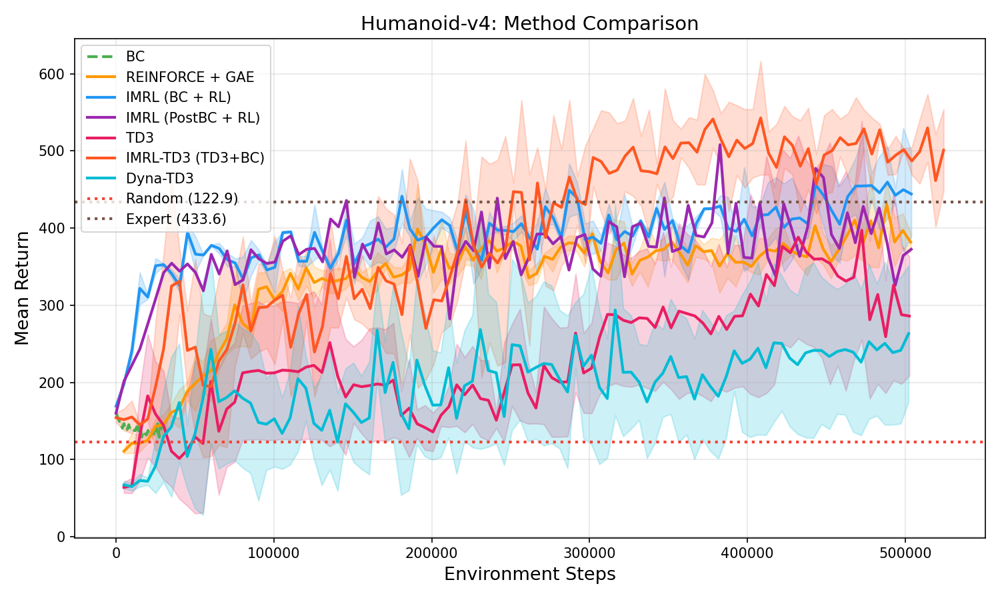

BC → RL Transfer
Imitation-to-Reinforcement Learning
Random Baselines: Agents acting with random policies across the four benchmark environments — HalfCheetah, Hopper, Walker2d, and Humanoid. These serve as lower-bound reference points for all method comparisons.
Abstract.
This paper proposes to study warm-start methods in reinforcement learning as a generalizable
learning paradigm rather than solely as a tool to accelerate convergence. By initializing
policies with demonstrations, behavior cloning–based warm-up stabilizes early learning
dynamics and constrains optimization to behaviorally plausible regions of the policy space.
We evaluate two initialization strategies — standard behavior cloning with RL fine-tuning
(PostBC) and an integrated imitation+RL approach (IMRL) — across four continuous-control
MuJoCo tasks from Gymnasium, comparing against a pure on-policy baseline (REINFORCE+GAE)
and an off-policy state-of-the-art (TD3). To assess transferability, we further examine how
warm-started policies adapt under embodiment changes and compare their sample efficiency
during downstream fine-tuning.
Results.
The matrix below shows one representative rollout per method × environment.
Hover any cell to play. Methods are ordered as a progression from pure imitation to pure
reinforcement learning.
BC
Behavioral Cloning
REINFORCE
+GAE (on-policy)
PostBC
BC → RL fine-tune
IMRL
BC + RL (ours)
Dyna
Model-based TD3
IMRL+TD3
BC + TD3 (ours)
TD3
Off-policy RL
HalfCheetah
≈ random
≈ random
≈ random
≈ random
improving
~3 500 ret.
~4 000 ret.
Hopper
partial
improving
partial
improving
improving
~1 500 ret.
~1 500 ret.
Walker2d
partial
improving
partial
improving
improving
peaks ~2 500
peaks ~2 500
Humanoid
above random
strong
strong
≈ expert!
strong
≈ expert!
struggles
Table 1. One representative rollout per method × environment (episode 0 of 3 seeds). Hover to play. Badge colors: red near-random, orange partial learning, green strong performance, blue near expert.
Learning Curves.
Mean return (±1 std, 3 seeds) over 500k environment steps. Dotted lines mark the
expert and random baselines for each environment.

HalfCheetah-v4. Expert 9 417 · Random −284.
TD3 and IMRL-TD3 are the clear leaders, both climbing to ~3 500–4 000 by 500k steps,
with IMRL-TD3 tracking TD3 closely throughout. Dyna-TD3 shows modest gains but fails
to match pure TD3, likely hindered by model compounding errors in the high-frequency
cheetah dynamics. All on-policy methods (BC, REINFORCE, IMRL, PostBC) remain anchored
near zero — the expert gait requires subtle body-pitch coordination that imitation alone
cannot capture.

Hopper-v4. Expert 1 227 · Random 19.
TD3 and IMRL-TD3 both exceed expert return (~1 500–2 000) but with high variance —
both discover aggressive policies not present in the demonstrations. Dyna-TD3 learns
steadily but plateaus near expert level, suggesting the world model adds sample
efficiency without enabling the same aggressive policy search. On-policy methods
(REINFORCE, IMRL) converge stably to ~600–800; BC head-starts but plateaus early.

Walker2d-v4. Expert 3 765 · Random 3.
TD3 and IMRL-TD3 are co-leaders (~2 500 peak) but both suffer periodic collapses.
Dyna-TD3 achieves comparable peaks with somewhat less variance, as the model provides
a smoothing effect over noisy environment transitions. On-policy IMRL reaches ~1 200
reliably — the most stable mid-range option. Pure BC and PostBC plateau quickly
without a sustained RL gradient.

Humanoid-v4. Expert 434 · Random 123.
The most revealing environment. IMRL and IMRL-TD3 both reach expert-level
performance (~430–500), with IMRL-TD3 showing slightly higher peak returns
due to off-policy stability. Dyna-TD3 improves meaningfully above random and
surpasses TD3, demonstrating that the world model partially compensates for the
exploration bottleneck in high-DoF settings. Pure TD3 plateaus well below expert
and never recovers — the 17-DoF space is intractable without an imitation signal.
Analysis.
HalfCheetahTD3 / IMRL-TD3 tie
A planar cheetah with a dense, smooth reward landscape — the ideal setting for off-policy
RL. TD3 and IMRL-TD3 are near-identical, confirming that the BC warm-start adds no
meaningful signal when the reward is already well-shaped. Dyna-TD3 lags: model-compounding
errors disrupt the fine motor coordination the cheetah gait requires. All on-policy methods
stay near zero — imitation alone is insufficient here.
HopperTD3 / IMRL-TD3 (noisy)
A single-legged hopper where balance is fragile. TD3 and IMRL-TD3 both exceed expert
return but with high variance, discovering aggressive out-of-distribution policies.
Dyna-TD3 reaches expert level more reliably, suggesting the world model provides
implicit regularization. On-policy IMRL converges safely to ~600–800 — the imitation
signal prevents early collapse at the cost of a lower ceiling.
Walker2dTD3 / IMRL-TD3 (high var.)
A bipedal walker requiring coordinated gait. TD3 and IMRL-TD3 peak equally high (~2 500)
but suffer periodic catastrophic collapses — the off-policy replay buffer can propagate
stale gradients. Dyna-TD3 shows similar peak performance with marginally fewer collapses.
On-policy IMRL remains the lowest-variance mid-range option; its joint imitation+RL
objective smooths the optimization landscape.
HumanoidIMRL-TD3 wins!
A 17-DoF full humanoid — the hardest task and the most revealing. Pure TD3 fails
completely; the exploration problem is intractable without guidance. Dyna-TD3 improves
over TD3 — the world model partially compensates — but plateaus well below expert.
Both IMRL variants succeed: on-policy IMRL and IMRL-TD3 reach expert-level
performance. IMRL-TD3 edges slightly higher, combining off-policy stability with
the imitation signal that makes the 17-DoF space tractable.
Summary.
Across all seven methods and four environments a consistent pattern emerges. For tasks with
simple, dense reward landscapes (HalfCheetah), off-policy RL (TD3, IMRL-TD3) dominates —
imitation and model-based planning add little. For mid-complexity locomotion (Hopper,
Walker2d), TD3 and IMRL-TD3 achieve the highest peaks but with high variance; Dyna-TD3
offers a useful stability trade-off while on-policy IMRL provides the safest convergence.
As task dimensionality grows (Humanoid), the exploration bottleneck becomes prohibitive
for pure RL: only methods combining imitation with RL (IMRL, IMRL-TD3) match expert
behavior, with IMRL-TD3 achieving the strongest result. Dyna-TD3's world model partially
compensates but cannot fully replace the imitation signal in high-DoF spaces.